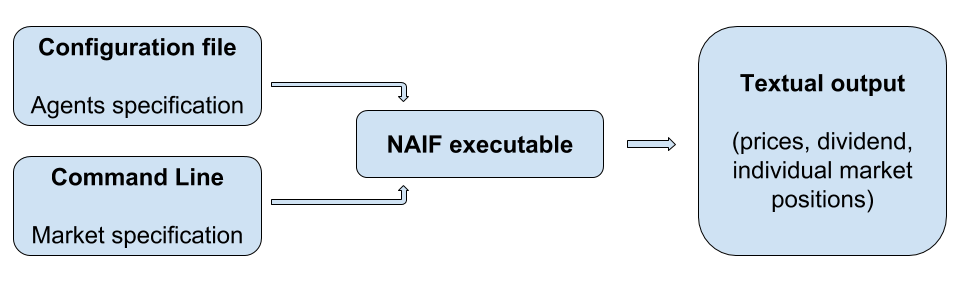

NAIF - Numerical Analysis of Investment Functions
Table of Contents
Getting Started
NAIF (Numerical Analysis of Investment Functions) is a program for simulating the trading activities of a heterogeneous group of agents in a simple two-asset economy. The code has been used to run simulations for several papers (see References).
Configuration data for the simulations are read from a file and are combined with command line options. Result are printed in ASCII format into the standard output. NAIF is written in C and requires some external libraries (see Installation). It has been tested and used on several Linux distribution but should run, in principle, on any Unix platform. No other OSes have been tested.
The main options and the syntax of the configuration file are briefly reviewed below. For a more detailed discussion see the list of examples.
Brief description of the program
The program reads the config file with investment functions of different agents and simulate the price dynamics of the market with such behaviors. All parameters are provided in the command line. The initial conditions are provided in the command line as well, while the initial shares assigned to different agents are read from the file.

Figure 1: Strucure of the program
The basic usage of the program is
naif [options] < [config file]
The output data printed to the standard output can be easily used to create plots of the generated time series.
Configuration File
Each line of the file is the description of one agent or one group of
agents. The lines beginning with a # symbol are considered comments
and ignored.
The definition of each agent is a comma separated list of parameters whose value is set with an assignment of the form
key=value
The possible parameters are
f- the definition of the investment function. This can be
defined as an arbitrary function with variables of the form
ret#,yld#,ewr#_#,ewy#_#,cwr#_#andcwy#_#, where#stands for a single digit. See below for explanation and examples. w- the initial wealth of the agent
x- the initial share of wealth invested in the risky security
u- upper limit of the investment function
l- ower limit of the investment function
eps- a noise component uniformly drawn from -1/2
epsto 1/2epsis added to the agent investment function at each period
Investment functions definition
The arguments of the investment function are of the type xy_z where
x is a string of three characters which denotes the type of argument
and the following (integer) numbers y and z stand for possible
specifiers. The meaning of the specifiers depend on the type of
argument
ret#1- stands for the realized return #1 steps in the past. Specifier #1 can take positive integer values 1,2,3,etc. Notice that due to the timing convention, the contemporaneous value of return cannot be an argument of the investment function.
yld#1- stands for the realized dividend yield #1 steps in the past. Specifier #1 can take non-negative integer values 0,1,2,3,etc.
ewr#1_#2- stands for the Exponential Weighting Moving Average estimator of the #1-th central moment of realized returns computed with the weight parameter "lambda" equal to 0.#2. Specifier #1 can take positive integer values 1,2,3,etc. Specifier #2 can take any non-negative integer value 0,1,2,3,etc. Notice that parameter "lambda" belongs to the interval [0,1).
ewy#1_#2- stands for the Exponential Weighting Moving Average estimator of the #1-th central moment of realized yields computed with the weight parameter "lambda" equal to 0.#2. Specifier #1 can take positive integer values 1,2,3,etc. Specifier #2 can take any non-negative integer value. Notice that parameter "lambda" belongs to the interval [0,1).
cwr#1_#2- stands for the Constant Weighting Moving Average estimator of the #1-th central moment of realized returns computed on the last #2 time steps. Both specifiers #1 and #2 can take positive integer values 1,2,3,etc.
cwy#1_#2- stands for the Constant Weighting Moving Average estimator of the #1-th central moment of realized dividend yields computed on the last #2 time steps. Both specifiers #1 and #2 can take positive integer values 1,2,3,etc.
Examples of the Config File
The following line
f=ret1+cwy3_12,x=.3,w=10
defines an agent who invests, at each time step, a share of wealth in the risky asset which is proportional to the sum of the last realized return (ret1) and the third central moment of the realized yields estimated through CWMA (cwy3) on the last 12 (12) time steps. The initial agent's endowment is 10 (w=10) of which 30% is invested in the risky security (x=.3) and the remaining in the riskless one.
A small modification
f=ret1+cwy3_12,x=.3,w=10,eps=.01
leads to a definition of analogous agent, but now, at each time step, a random component is drawn from an uniform distribution on [-.005,.005] and added to the agents' investment function.
The line
f=ret1+cwy3_12,x=.3,w=10,eps=.01,u=0.99,l=0.01
describes the same agent, whose investment choice is truncated in order to be in interval [0.01,0.99]. (This guarantees the boundedness of the dynamics!)
A group of similar agent can be defined prepending to the agent definition an integer number, which denotes the number of agents in the group, followed by a column ':'. For instance
50:f=ret1+cwy3_12,x=.3,w=10,eps=.01,u=0.99,l=0.01
stands for a group of fifty agents similar to the agent discussed above. Notice that due to the i.i.d. nature of the random component of the investment function, the investment decisions of the different agents of the group usually will not be identical.
Options
The following options are in use. The default values are shown in []. Notice that the outcome is controlled by the option -O:
- t
- simulation length (default 10)
- T
- transient length (default 0)
- s
- skip this number of steps in output (default 1)
- S
- set the seed of the random number generator (defult 0)
- r
- riskless return (default 0.01)
- D
- dividend structure. Define parameters values using pairs
'name=values'. Names are 'type', 'mean' and 'stdev'.
[type=0,mean=.02,stdev=0]. Possible types are:
- 0
- constant yield
- 1
- log-normal i.i.d. yield
- 2
- uniform i.i.d. yield
- 3
- geometrically growing dividend with initial value 0.001 and log-normal growth rate with given mean and stdev
- R
- initial return structure. Define parameters values using pairs 'name=values'. Names are 'mean' and 'stdev'. ( default mean=.02, stdev=0)
- Y
- initial yield structure. Define parameters values using pairs 'name=values'. Names are 'mean' and 'stdev'. ( default mean=.02, stdev=0)
- O
- set the output, list of t:step, r:return, p:price, w:wealth, x:avg.inv.share, y:yield, d:dividend, A:risky asset, B:riskless asset, X:inv.shares, W:wealth shares, (default 'rx')
- v
- verbose output
- h
- help message
Simulation Initial Values
A simulation is completely specified only when the initial conditions are defined. For the simulations in NAIF there are three things that have to be specified: initial agent's portfolio, initial market history and initial values of agent's forecast variables. Below we analyze each of these three aspects.
Initial portfolio composition
Each agent i is given an initial wealth level (wi) and an initial share of wealth (xi) invested in the risky assets. These quantities can be explicitly specified using the parameter w and x in the configuration file. If not specified, their default values are 1 and .5, respectively. From these quantities, the initial portfolio composition of each agent is determined as
\[ A_i = x_i w_i / \sum_j x_j w_j \]
\[ B_i = (1-x_i) w_i / \sum_j x_j w_j \]
where \(A_i\) and \(B_i\) stand for the initial amount of risky and riskless security, respectively. These values should be positive in order the initial market conditions could be defined. Otherwise, the message "Agents specification does not allow to define initial price." is printed.
Initial market history
The initial price (for time t=0) of the risky security, according to the initialization of the agents' portfolio defined above, is set to 1.
The generation of the first dividend (for time t=1) depends on the market process specified in the command line. If the process is described by means of the yield, then yield "yld1" is accordingly generated and first dividend coincides with "yld1" since p0=1. If the process is described by means of the dividend (i.e. if the dividend is assumed to be growing), initial value of the dividend is set to .001.
The first price (for time t=1) is determined using the agents' investment functions, already.
Moreover, an initial "fake" histories of both price returns and dividend yields are generated. The lengths of these histories are set to a value large enough to provide an initial value for each estimator (see below). The returns and yields are identically and independently extracted from an uniform distribution. The mean and variance of the distributions for the return and yield can be specified from the command line. Both parameters have a default value of 0.
Initial forecasts
The initial value assigned to agent's forecast variables depends on
their nature. Past returns variables (ret, yld) and equally
weighted averages (cwr and cwy) are computed on the initial return
or yield history, respectively, generated according to the procedure
described above. Conversely, to the EWMA estimators (ewr and ewy),
which are (in principle) functions of an infinite set of returns, a
value is assigned which is equal to the last return raised to the
order of the estimator. For example, if \(r_0\) is the last return of
the initial history of returns, ewr1 is set to \(r_0\), ewr2 is set
to \(r_0^2\), ewr3 to \(r_0^3\), etc. Notice that the memory parameter
"lambda" doesn't play any role in the initial value of the estimator.
Installation
Download the latest source code from the cafed repository. The installation should be straightforward. Unpack the package
tar -xzvf naif.tar.gz
move inside the source directory, run the configure script and build the files
cd naif
./configure
make
finally become root and install them
su make install
for more detailed instructions see the file "INSTALL".
Required Libraries
NAIF is written in C. It requires both the matheval library and the
GNU Scientific Library. Both libraries should be available through the
package management software of any Linux distribution. Remember to
install the development version of the libraries before trying to
compile NAIF.
Disclaimer
Please notice that the program has been written for personal use, and is distributed under the GPL license (see the file ``COPYING``) in the hope it could be of help to other people, but without any implied warranty.
Contributors
References
M. Anufriev and G. Bottazzi, Market Equilibria under Procedural Rationality, Journal of Mathematical Economics, 46 (6), pp. 1140–1172, 2010
M Anufriev and P Dindo Wealth-driven selection in a financial market with heterogeneous agents, Journal of Economic Behavior & Organization 73 (3), 327-358, 2010.
M Anufriev Wealth-driven competition in a speculative financial market: examples with maximizing agents Quantitative Finance 8 (4), 363-380, 2008.
M.Anufriev, G.Bottazzi and F.Pancotto Equilibria, Stability and Asymptotic Dominance in a Speculative Market with Heterogeneous Agents Journal of Economic Dynamics and Control, 30, pp. 1787-1835, 2006
M. Anufriev and G. Bottazzi Noisy Trading in the Large Market Limit Lecture Notes in Economics and Mathematical Systems, Issue 564, Springer-Verlag, Berlin, 2006